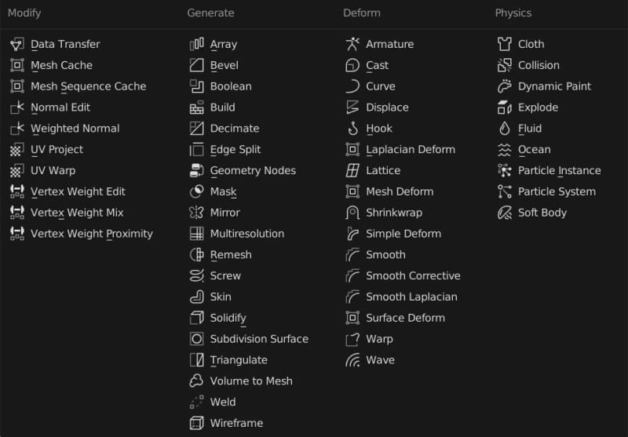
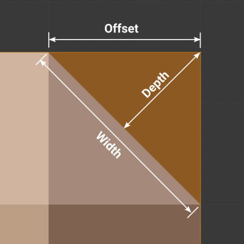
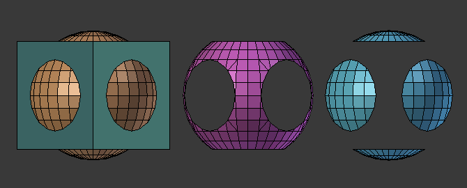

Blender 修改器
修改器是一种自动操作，以非破坏性的方式影响对象的几何形状。修改器的工作原理是改变对象的显示和渲染方式，而不是改变可以直接编辑的几何图形。
添加修改器： 属性编辑器 > 修改器属性 > 添加修改器
应用修改器： Ctrl A，应用多个修改器时从上到下应用才不会出错。
修改器类型

1.修改 Modify
修改组修改器是类似于形变修改器，不过不会直接影响物体形状，但会影响物体的一些其他数据，比如顶点组。
2.生成 Generate
这些是建设性/破坏性的工具，能够影响整个网格的拓扑。它们可以改变对象的整体外观，或添加新的几何图形到对象。
3.形变 Deform
与生成不同，它们只改变对象的形状，而不改变其拓扑结构。
4.模拟 Physics
这些模拟代表的是物理模拟 。在大多数情况下，只要启用了粒子系统或物理模拟，它们就会自动添加到修改器堆队列中。它们唯一的作用是定义其在修改器堆队列中的位置，从这个位置获取它们所表示的模拟的基本数据。因此，它们通常没有属性，由属性编辑器中单独关于模拟的部分中的设置控制。
表面细分修改器 Subdivision Surface Modifier
https://docs.blender.org/manual/zh-hans/4.0/modeling/modifiers/generate/subdivision_surface.html
表面细分修改器用于将网格的面分割成更小的面，使其看起来更平滑。
下图为细分等级分别为 0 到 3，无平滑着色和有平滑着色下的差异。

基本操作
- 选择模型，添加表面细分修改器。可以从修改器中选择表面细分修改器，也可以通过快捷键
Ctrl+数字来添加对应细分等级的表面细分修改器 - 修改参数。
模式区别
- Catmull-Clark 型：细分并平滑曲面
- 简单型：仅细分网格，不平滑
相关快捷键
Ctrl 2：添加细分级数为 2 的表面细分修改器。
常见问题
- Catmull-Clark 细分会对所有边进行磨圆，但部分边不想被磨圆
有两种方法可以控制：
（1）加权边折痕 表面细分的加权边折痕允许您更改表面细分修改器细分几何体的方式，使边具有平滑或锐利的外观。
所选边的折痕权重可以在3D视图的侧栏的 变换 面板中更改。类似缩放工具的 Shift-E 也可以用来调整折痕的权重。数值越大，边缘越 锐利 ，对细分曲面的平滑效果越有抵抗力。
（2）加循环边
实体化修改器 Solidify Modifier
https://docs.blender.org/manual/zh-hans/4.0/modeling/modifiers/generate/solidify.html
实体化修改器获取任意网格的表面，然后为之添加深度，使之变厚。
倒角修改器 Bezel Modifier
https://docs.blender.org/manual/zh-hans/4.0/modeling/modifiers/generate/bevel.html
倒角修改器可以把应用该修改器的网格的棱切成斜角，允许控制如何以及哪里把倒角操作应用到网格上。
倒角修改器是编辑模式下 倒角操作 的非破坏性替代方式。
宽度类型
定义如何使用宽度以决定倒角总量。

- 偏移 Offset：原始边到倒角面的垂直距离。
- 宽度 Width：坡口形成的两条新边的距离（如果有多个段，则坡口两侧的边）。
- 深度 Depth：该值是从原始边到倒角面的垂直距离。
- 百分比 Percent：新边线滑移距离相对邻边长度的百分比。
- 绝对 Absolute：沿着与斜面边缘相邻的边缘的确切距离。当连接到斜面边缘的非斜面边缘与直角以外的角度相遇时，可以看到与偏移的差异。
布尔修改器 Boolean Modifier
https://docs.blender.org/manual/zh-hans/4.0/modeling/modifiers/generate/booleans.html
布尔修改器可以对两个物体进行三种布尔运算（并集、差集、交集）。

蒙皮修改器 Skin Modifier
作用
蒙皮修改器使用顶点和边来创建蒙皮面，使用每个顶点的半径来更好地定义形状。

基本操作
- 创建顶点。可以先创建一个任意网格物体，编辑模式下，
M合并顶点到中心 - 添加蒙皮修改器
- 挤出顶点。一个顶点可以挤出多个分支
- 标记根点。选择一个顶点，点击标记根点，根点外围会显示一圈红色虚线。每组连接的顶点都必须且只能有一个根点，默认会选择一个，也可手动更换根点
- 缩放蒙皮顶点半径。选中顶点，
Ctrl A进行缩放。注意快捷键不是S，而是Ctrl A，Ctrl A以后再按X/Y可以把缩放约束到某一个轴向上 Ctrl R可插入顶点
快捷键
E：挤出Ctrl A：缩放顶点半径Ctrl R：插入顶点。注意快捷键不是S，而是Ctrl A，Ctrl + A以后再按X/Y可以把缩放约束到某一个轴向上
置换修改器 Displace Modifier
作用
置换修改器根据纹理的强度置换网格中的顶点。可以使用程序纹理或图像纹理。
主要用来模拟凹凸效果。

基本操作
- 添加平面，并表面细分。因为置换修改器是置换网格中的顶点，顶点太少置换效果就不明显，细分是为了增加顶点。可以在编辑模式下右键，选择细分，也可以添加表面细分修改器或多级精度修改器来实现细分
- 添加置换修改器
- 添加贴图。点击置换修改器面板中的
新建，转到纹理属性面板，选择一个纹理。Blender 内置了一些程序化纹理，也可以打开自定义图像纹理 - 调整置换修改器和贴图参数。
镜像修改器 Mirror Modifier
作用
镜像修改器沿着自身 X/Y/Z 轴，穿过物体原点镜像网格。还可以使用另一个物体作为镜像中心，使用该物体的局部轴向而非自身轴向。
基本操作
- 选择需要镜像的物体
- 添加镜像修改器
- 调整修改器参数
技术关键点
- 镜像中心：默认为物体自身原点，也可设置为其他物体
- 镜像平面：过镜像中心垂直于所选轴的平面
- 切分：删除镜像平面一侧网格，可翻转
- 合并：对间距小于阈值的顶点进行合并